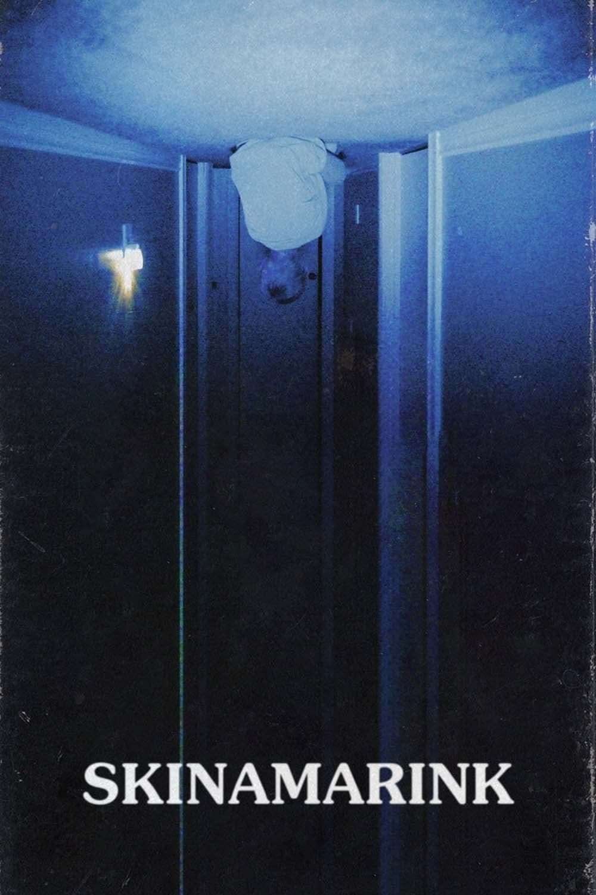
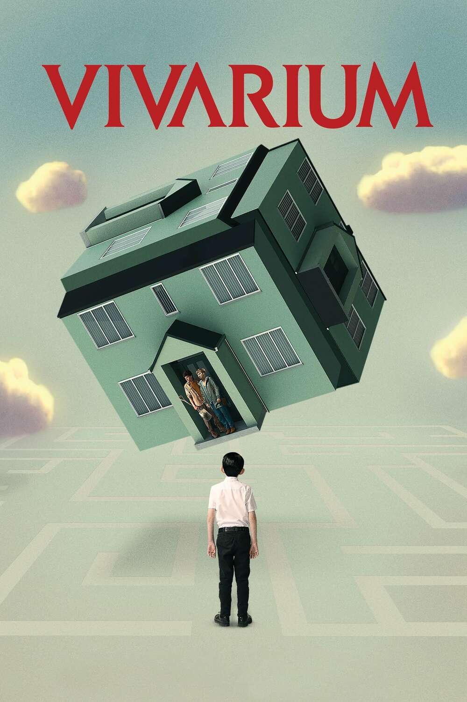
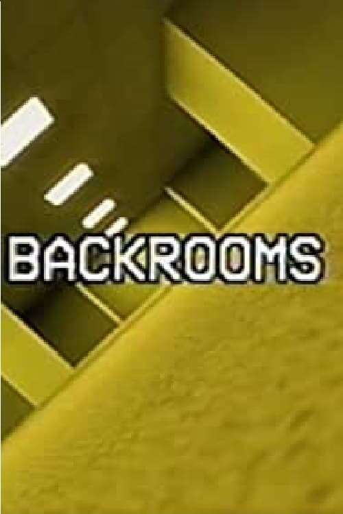
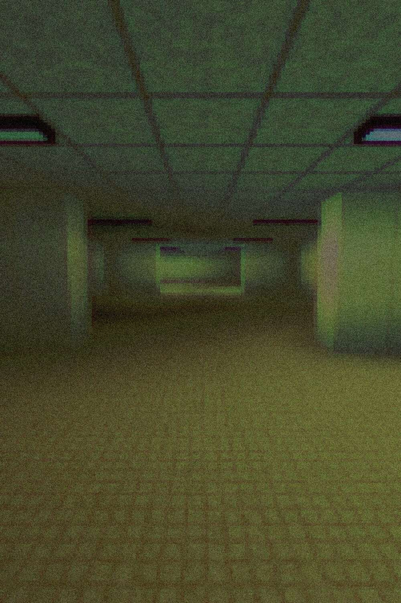

The Liminal Movies
Liminal movies explore the ‘in-between’ spaces that are often transitionary or transformative.
These films capture moments and places that evoke a sense of eeriness, nostalgia, and otherworldliness.
They make us feel both familiar and strange, immersing us in the atmosphere of the uncanny and the surreal.
Through settings like deserted streets, empty buildings, and twilight zones, liminal movies take us on a journey through spaces that challenge our perception of reality and time.

Rating: 3.5/5
Two children wake up in the middle of the night to find their father is missing, and all the windows and doors in their home have vanished.

Rating: 3/5
A young woman and her fiancé are in search of the perfect starter home. After following a mysterious real estate agent to a new housing development,
the couple finds themselves trapped in a maze of identical houses and forced to raise an otherworldly child.
The Backrooms (Found Footage)
(2022)

Rating: 2.5/5
A short horror film about liminal spaces.

Rating: 2/5
A short film that takes a form of a video game. The viewer can see everything from the main character’s perspective.
The protagonist is exploring backroom corridors while also experiencing a sense of confusion.